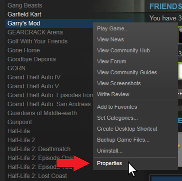
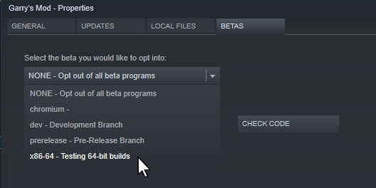
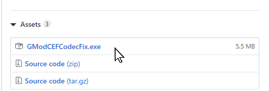

Before installing plugins, close Garry's Mod completely. The URL to this page has been automatically copied to your clipboard, so you can open it in a web browser.
Chromium Embedded Framework is a replacement for GMOD's outdated Awesomium integrated browser. It is up-to-date with web standards, which allows HD YouTube, greater support for other videos, and better framerates.
Currently, you must opt-in to run Chromium on GMOD, which you can do as follows:
1. Right click Garry's Mod in your Steam library and select "Properties"

2. In the "Betas" tab, use the dropdown to switch to the "x86-64" branch

Note: Chromium is currently only supported on Windows.
We use a third-party patch to enable certain video codecs in Chromium which are required for many videos to play.
You must install Chromium as described above for this to work.
1. Download the latest version of GModCEFCodecFix.exe from https://github.com/solsticegamestudios/GModCEFCodecFix/releases

2. Move the .exe file to your desktop, then run it launch Garry's Mod with codecs.
IMPORTANT: Steam sometimes removes the codecs patch. You may need to launch Garry's Mod using this patch every time you want to enable video codecs!
Done installing plugins? Click here to rejoin Swamp Cinema!
(If you want Codecs, launch GMOD using the patch then click the link to join)
© 2020 Swamp Servers - Contact Us